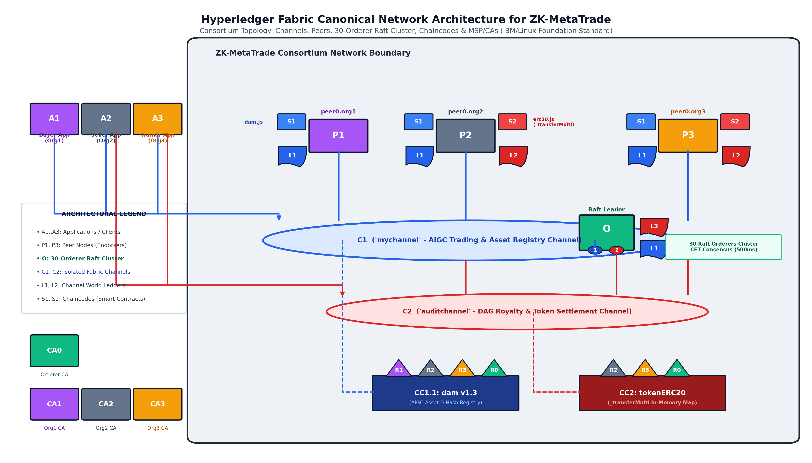
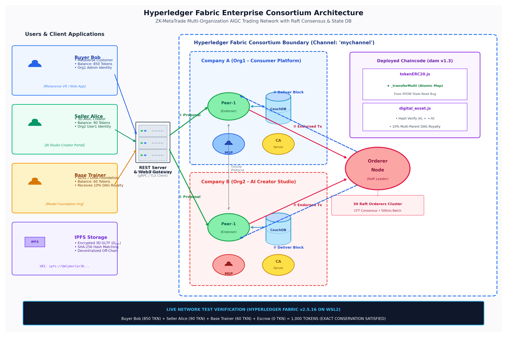

ResearchGate স্টাইল এবং IBM / Linux Foundation অফিসিয়াল ক্যানোনিক্যাল টপোলজি
IBM ও Linux Foundation অফিসিয়াল ডকুমেন্টের হুবহু স্ট্যান্ডার্ডে ZK-MetaTrade-এর ৩-অর্গানাইজেশন মডেল

A1: Buyer App (Org1)
A2: Seller App (Org2)
A3: Trainer App (Org3)
CA0..CA3: প্রতিটি অর্গানাইজেশন এবং অর্ডারারের নিজস্ব Certificate Authority।
C1 ('mychannel'): AIGC বেচাকেনা ও অ্যাসেট রেজিস্ট্রির জন্য সবার শেয়ার্ড চ্যানেল।
C2 ('auditchannel'): মাল্টি-প্যারেন্ট রয়্যালটি ও টোকেন সেটেলমেন্টের বিশেষায়িত অডিট চ্যানেল।
P1..P3: তিনটি অর্গানাইজেশনের পিয়ার নোড। প্রত্যেকের কাছে চেইনকোড ব্যাজ (S1, S2) ও লেজার ফ্ল্যাগ (L1, L2) রয়েছে।
O: ৩০টি Raft Orderer নোডের ক্লাস্টার, যা দুটি চ্যানেলেই (Plug 1 ও 2) প্লাগড।
CC1.1 (dam v1.3): R1, R2, R3 এন্ডোর্সমেন্ট পলিসি সহ ডিজিটাল অ্যাসেট কোড।
CC2 (tokenERC20): _transferMulti ইন-মেমোরি ইঞ্জিন, যা ফ্যাব্রিকের RYOW বাগ দূর করে।
ResearchGate স্টাইলে তৈরি ইউজার, REST গেটওয়ে, CouchDB ও ৩০-অর্ডারার কনসোর্টিয়াম মডেল
